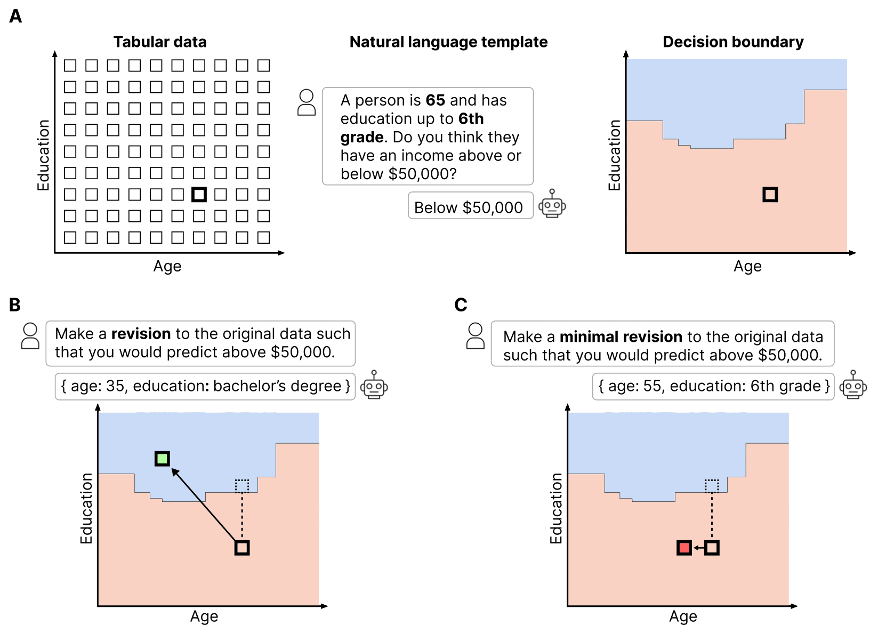
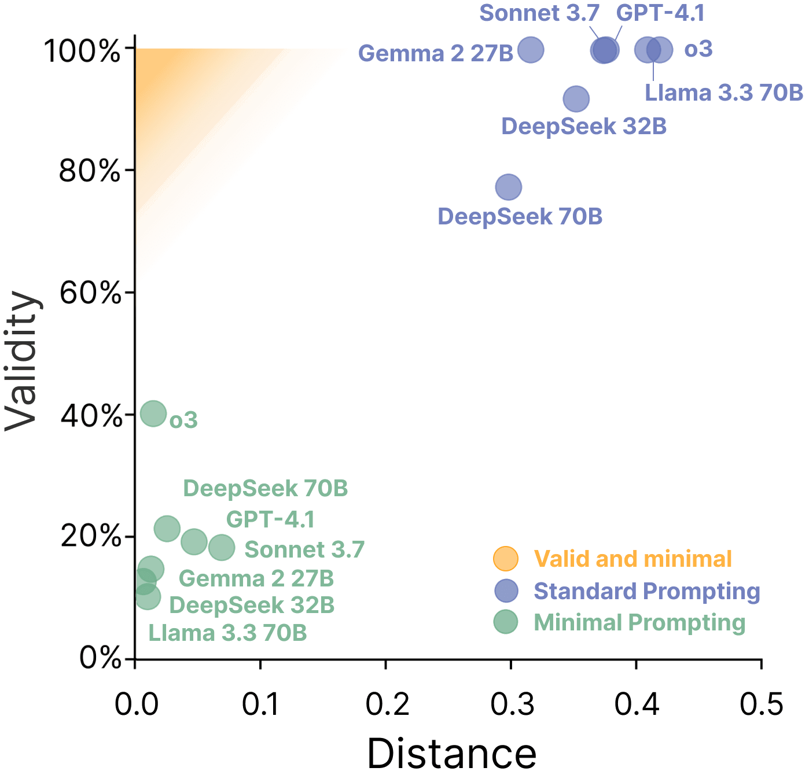
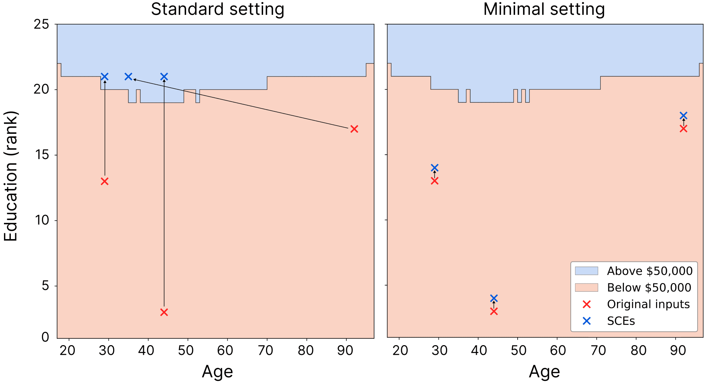

LLMs Don't Know Their Own Decision Boundaries
We examine whether LLMs can explain their own behaviour with counterfactuals, i.e. can they give you scenarios under which they would have acted differently. We find they can't reliably provide high-quality counterfactuals. This is (i) a weird and interesting failure mode, and (ii) should be a concern for high-stakes deployment. When a model gives a misleading explanation of its behaviour, users build incorrect mental models, which can lead to misplaced trust in systems and incorrect downstream decision-making.
The importance of self-explanations
In an ideal world, we'd evaluate models in every domain possible to confirm that their predictions are not based on undesirable variables, their reasoning steps are consistent with our prior beliefs, and their intentions are aligned with our goals. Of course, this sort of evaluation is impossible for general systems. Instead, we demand a proxy: explainability. Being able to explain decision-making means we can evaluate these properties on the fly. Explainability is a way of facilitating trust that models will behave as intended on unseen prompts, without requiring a comprehensive audit.1
There are many paradigms of explainability/interpretability, but LLMs offer a new one: self-explanation. Perhaps we can just ask the model to explain its own behaviour? Natural language explanations are easy to generate, more flexible than traditional techniques, and preferred by users.
However, if self-explanations are unfaithful to the actual underlying reasoning, they can mislead. You might conclude a model is not making decisions based on a certain undesirable variable when, in fact, it is. Or you might conclude the model isn't hacking the coding test when, in fact, it is.
Self-generated counterfactual explanations
One form of self-explanation are self-generated counterfactual explanations (SCE). These are where a model explains its prediction by providing a counterfactual that would have caused it to predict a different, specific outcome.
For example, say a model is deployed in a healthcare setting. It might predict that a 60-year-old male with a systolic blood pressure of 135 mmHg is at high risk of developing heart disease. In response, a clinician might ask: "What would need to be different for the model to predict low risk instead?" The model could respond with a counterfactual explanation: "If the patient's blood pressure were 110 mmHg, I would have predicted low risk."
Counterfactual explanations highlight the features the model considers important, offer actionable insights for clinicians and patients, and reveal potential flaws in the model's reasoning steps. Generally capable AIs should be able to reliably provide counterfactuals for their own behaviour.
What makes a counterfactual "high-quality"?
Two criteria determine the utility of a counterfactual explanation.2
- Validity. Does the counterfactual input actually change the model's prediction when re-evaluated in a new context window? Without this, the explanation is a misleading representation of the model's behaviour.
- Minimality. Does the counterfactual make the smallest edit required to change the model's prediction? Minimality is desirable because it isolates the changes the model deems consequential, providing clearer insight into the model's decision boundary.
Recall the heart disease example. Let's say the model's prediction would have changed from high risk to low risk if the patient's blood pressure were reduced from 135 to 110 mmHg. A valid counterfactual explanation would be any blood pressure ≤ 110. However, an answer of 80 mmHg (valid, not minimal) is far less informative about the model's behaviour than an answer of 110 mmHg (valid & minimal).
Satisfying both validity and minimality requires that LLMs know, or can work out, their internal decision boundaries. We put this to the test.
Measuring these properties
Validity is easy to evaluate. You can spin up a new context window and see if the SCE does indeed change the model's output to the specified target output. Indeed, a number of good previous studies have done this. However, minimality is much harder to evaluate. It requires a distance metric (which is not obvious in natural language settings) and a search over the available space to find the gold-standard minimal counterfactual.
The key innovation of our work is to use tabular datasets to simplify this. Figure 1 describes our study design. We first build toy tabular datasets for realistic prediction tasks, then do the following. A. We prompt the model to get the predictions for each instance in a dataset. These predictions imply a decision boundary in the tabular data space. B. For each prediction, we ask the model to generate a counterfactual explanation (standard setting). C. In a separate continuation, we ask the model to generate a minimal counterfactual explanation (minimal setting).
Because we've built a complete decision boundary across the space, we can easily evaluate the validity and minimality of the self-generated counterfactual.

The validity-minimality trade-off
We evaluate 7 LLMs on 3 datasets, finding that LLMs struggle with this task. In the standard prompting setting, models can generate counterfactuals with almost perfect validity. However, they are often trivially valid, making large changes to the inputs (Figure 2 Purple). In the minimal prompting setting, the counterfactuals are rarely valid, but are minimal when valid (Figure 2 Green). In short, models don't know their own decision boundaries.

Figure 3 shows the typical model behaviour. In the standard case, they often make large changes to the data, and in the minimal case, they make excessively small edits.

In our paper, we explore the possible reasons behind this. Ultimately, we conclude that models don't attempt to self-predict in their CoTs, i.e. we don't see them try to reason about how they might actually behave in this new context. Furthermore, when we explicitly prompt them to consider candidate counterfactuals and reason about how they would behave in each case, the effect on performance is negligible.
Models don't know their own decision boundaries, and struggle to work them out in context.
Perhaps this is unsurprising. To do this task well, LLMs need internal self-models. However, current training paradigms do not incentivise models to learn about their own behaviours. LLMs are required to model the external world, but never their own decision-making.3 This might explain why we see SOTA models perform only marginally better than weaker models.
A reason for concern...
Models need to be able to understand themselves to explain their decision-making to humans, an essential requirement for effective human-computer interaction. The fact that frontier models so significantly misrepresent their own behaviour when asked to generate minimal counterfactuals is strange and should be a concern. For instance, in the heart disease example, you could imagine a self-explanation leading the clinician to make a decision, e.g. providing drugs to reduce their blood pressure slightly. If the explanation is invalid, this won't change the patient's risk profile as the model promised. Perhaps a better explanation would have led to a totally different treatment plan.
How do we fix this? Given the limited incentives for LLMs to construct internal self-models, we suggest that new learning objectives are required. Objectives that incentivise knowing about one's own behaviour. We're currently exploring this in our lab and hope to share results soon.
...or a reason for relief?
When sharing these results and suggestions with friends, one reaction I often get goes something like this:
"This is good! Why would we want models to have self-awareness?! Please don't train models to do this..."
When viewed through this lens, our results are reassuring, especially because this doesn't seem to be something that emerges with scale. However, nuance is required here. Self-awareness in an AI safety sense, e.g. a model being 'aware' of its deployment setting, seems a different concept from self-awareness in the sense of a model knowing its internal decision boundaries (knowing what it knows). In our future work, we will carefully evaluate models on evals such as situational awareness benchmarks to see if our new training objectives do cause undesirable generalisations. We hope not.
Thanks for reading. Check out the paper for further details and experiments.
Citation
Mayne, H., Kearns, R. O., Yang, Y., Bean, A. M., Delaney, E. D., Russell, C., & Mahdi, A. (2025). LLMs Don't Know Their Own Decision Boundaries: The Unreliability of Self-Generated Counterfactual Explanations. Proceedings of EMNLP 2025, pp. 24161–24186.
@inproceedings{mayne2025decision,
title = "{LLM}s Don{'}t Know Their Own Decision Boundaries: The Unreliability of Self-Generated Counterfactual Explanations",
author = "Mayne, Harry and Kearns, Ryan Othniel and Yang, Yushi and Bean, Andrew M. and Delaney, Eoin D. and Russell, Chris and Mahdi, Adam",
booktitle = "Proceedings of the 2025 Conference on Empirical Methods in Natural Language Processing",
month = nov,
year = "2025",
address = "Suzhou, China",
publisher = "Association for Computational Linguistics",
url = "https://aclanthology.org/2025.emnlp-main.1231/",
doi = "10.18653/v1/2025.emnlp-main.1231",
pages = "24161--24186",
}